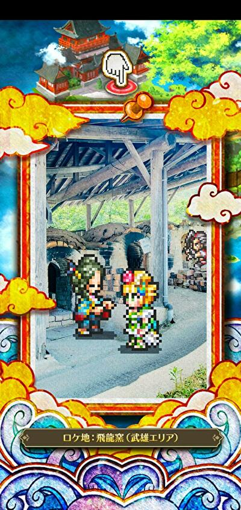
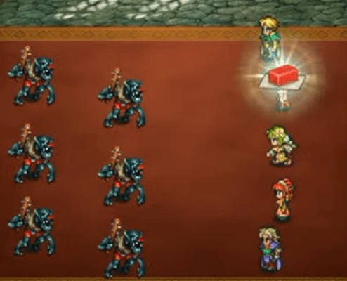

ロマサガＲＳ佐賀県コラボを振り返る
ホーム > ロマサガＲＳ > ロマサガＲＳ佐賀コラボ
ロマサガRSだけではなく、佐賀県の広報部からも佐賀コラボの情報は発信されていました。
佐賀県広報広聴課からサガのお知らせ。
【お知らせ】
— 佐賀県広報広聴課 (@saga_kouhou) July 29, 2021
『ロマンシング佐賀2021』と『ロマンシング サガ リ・ユニバース』のゲーム内コラボ第１弾開始✨
「みんなでいくばい！SaGa風呂制圧戦」を開催♨️
詳しくはこちら▼https://t.co/05XN0156pi#ロマ佐賀 pic.twitter.com/n2u91VpRPv
制圧戦
全体マップ
敵情報
雑魚敵
戦闘員が風呂上がり（笑）何か違和感あると思ったら、
— コッペリア (@s204_555) July 29, 2021
戦闘員たち風呂上がりやん・・・。
しっかり佐賀満喫してる！#ロマ佐賀 pic.twitter.com/yFG8XXEIIR
7/28 始まりの湯
対象のマップ

初日の対象エリアは上図の通り。サガフロ四天王の一人「シュウザー」と、サガフロ2の将魔の一人「音の将魔」がボスでした。
中央に緑色の屋根の建物がありますが、これはサガフロの主人公を選択する画面で出てくる建物です（下図でブルーが寄りかかっている建物）。

シュウザーも音の将魔も、佐賀県にまつわる技を使ってきたので、それをご紹介させていただきます。
シュウザー
シュウザーは「W・R・S・B」という技を使ってきました。去年はボクオーンがワラスボに担当でしたね。
W・R・S・Bはワラスボ(WARASUBO)の母音です。佐賀市でもそう呼んでいるらしいw
佐賀市公式サイト WRSB
佐賀市プロモーションムービー 「W・R・S・B」
音の将魔
音の将魔は唐津くんちに関する技を使ってきました。去年はロックブーケが唐津くんちを担当していましたね。
去年記事を書いたときは動画を見て「凄い迫力！」ぐらいの感想で終わっていたのですが、そもそもこのお祭りは何のために、どんな願いを込めて開催されているのかが気になったので調べてみました。

画像はこちらから抜粋
本場の唐津くんちはこんな感じらしいです。
参考
7/29～7/30 古湯温泉エリア
2日目は古湯温泉エリアです。対象のマップは以下。
このエリアのボスは「樹の将魔」と「アラクーネ」でした。
樹の将魔
樹の将魔にのってるのは佐賀の県鳥カササギです。

カササギ（カチガラス）の紹介
原作の樹の将魔はこんな感じでした。
原作の樹の将魔は少し涸れたような色をしています。「紅葉の舞い」という技を使うことから、秋の紅葉のイメージなんでしょう（動画で紹介した紅葉の舞いは原作の樹の将魔も使ってきた技です）。
一方、ロマサガRSの樹の将魔は、実がなっているように見えますね。苺と柿？？でしょうか。
カササギは雑食性で、昆虫、ミミズ、貝類、魚類、カエル、さらには果実類（キュウリ、スイカ、柿など）、穀物、豆類も餌としています。
樹の将魔にカササギの餌がなってるっていうことですかね。
カササギ（カチガラス）の紹介 「生態・習性」より引用
その他参考：カササギ 一般生態，生息場所選択 （1）食性
アラクーネ
アラクーネは「竹崎かに軍団」という技を使ってきました。
去年はクジンシーが竹崎かに担当でしたね。
竹崎カニは、太良町の観光情報サイトで紹介されています。かにうまそう～。

古湯温泉エリア関連のLoading画面
嘉瀬川ダムはここ
これは「鶴霊泉（かくれいせん）」という温泉宿です。
公式サイトの写真はこちら。

※写真は鶴霊泉 公式サイトの温泉紹介ページより抜粋
メチャクチャ綺麗ですね！！！！行きたい、これは行きたいよ！！！！
鶴霊泉 公式サイト TOPページ

古湯エリアにある橋と言えば、制圧戦のマップでは「みやのふちはし」という場所があります（漢字だと「宮の淵橋」）。
↓これのことでしょう。Google Mapなのでちょっと移動してみればわかると思いますが、Loading画面の橋と似ているのでまあこれのことなんでしょうね。

ソバ屋さん。ソバの実から自家農園で栽培している点で他店と一線を画しているらしい。

木漏れ陽（こもれび）／三瀬（佐賀観光情報）
古湯温泉エリア関連のスタイル
エミリア
ちょっと自信ないですけど、でも古湯温泉エリアの足湯・・・これかな？
参考
ナカジマ零式

古湯・熊の川温泉花火大会です。残念ながら2020年、2021年は中止になってしまったようです。
参考：じゃらん 古湯・熊の川温泉花火大会
ちょっと古いですが、2014年の花火大会の様子がyoutubeに公開されていたので張っておきます。
参考
7/30～7/31 嬉野温泉エリア
水の将魔とメタルブラック対象のマップ

メタルブラック
去年はノエルが呼子のイカを担当していました。
佐賀県の唐津市呼子町は「イカの活造り」が生まれた町。
河太郎というお店が呼子のイカを使った活造りの発祥のお店らしい。
河太郎呼子店

水の将魔
水の将魔は「温泉トリップ」という技を使ってきました。
しかし注目すべきはその姿。完全に牛ですね。佐賀牛です。

去年はダンターグが佐賀牛を担当していました。
本物の佐賀牛の情報
う、、、うまそう・・・・！！！！
公式サイトや公式のtwitterもある模様。興味ある方はフォローしてみては？
公式の佐賀牛のサイト
公式のtwitter

嬉野温泉エリア関連のLoading画面

実際の写真は以下

椎葉山荘 公式サイト

嬉野には茶畑があるのでその写真です。

参考
- 嬉野市 うれしの茶交流館「チャオシル」
- 嬉野茶事
- JAさが うれしの茶（嬉野茶）
- EDITORS SAGA 嬉野には茶畑でお茶を愉しめる場所がある?!「茶空間体験」で贅沢な時間を。
- SFC(Saga Prefecture Film Commission) 茶畑(嬉野市)
- あそぼーさが 茶摘みシーズンに遊びにおいでよ うれしの茶のふるさとめぐり
- Tea tourism

肥前夢街道は忍者村を売りにしているみたいですね。
忍者村 肥前夢街道 公式サイト
twitterもやっているみたい。佐賀コラボについても発信していました。
遂に発表されましま！
— 元祖忍者村 肥前夢街道【公式】 (@hizenyumekaidou) July 28, 2021
ロマシングサガRS佐賀県コラボ！
今回なんと佐賀元祖忍者村肥前夢街道もコラボしております！ pic.twitter.com/1zNLamHy5w

シーボルトの湯はここですね。
嬉野市観光情報 嬉野温泉公衆浴場「シーボルトの湯」
シーボルトの足湯はメイレンのスタイル紹介のところでご紹介します。
嬉野温泉エリア関連のスタイル
メイレン
SQUARE ENIX様の「ロマンシング サガ リ・ユニバース」にて、
— チーコ (@chyko7080) July 31, 2021
『SSメイレン』を描かせて頂きました。
よろしくお願いしますhttps://t.co/Bd1oCa4wAF#ロマサガRS pic.twitter.com/qAzFYyZaGt
猫が一緒に書き込まれていますね。
この猫は嬉野温泉にある「シーボルトのあし湯」という場所に実在する猫らしいです。ｶﾜ(・∀・)ｲｲ!!
「猫の石像がありますよ」
— 水野旅館（佐賀・唐津）支配人のアカウント (@rutumix) November 18, 2019
「ってか猫じゃね？」
と通りすがりの方がコメントしているのが印象的でした。
泳いだのか、ジャンプしたのかも謎です。 pic.twitter.com/bt19BLLNgn
先ほどご紹介させていただきた、シーボルトの湯のすぐそばにシーボルトのあし湯があります。

参考
リッチ

リッチが食べているのは「温泉湯豆腐」。
嬉野市は温泉湯豆腐で有名で、特に「宗庵 よこ長」というお店は温泉湯豆腐発祥のお店らしいですよ。
参考
リッチの言う通り、これを食べれば「くぁらどぁのうつごぁくぁら（体の内側から）」暖まりそうですね。

ウィル

7/31～8/1 武雄温泉エリア
炎の将魔とベルヴァ対象のマップ

炎の将魔
炎の将魔は「アームストロング砲」という技を使ってきました。佐賀市にある「佐嘉神社」にア―ムストロング砲があります。かつて佐賀藩がアームストロング砲の製造を試みたらしいです。
実際に製造した砲がアームストロング砲と同等のものだったかについては不明で議論が分かれているらしいです。
※画像はさがの歴史・文化お宝帳 アームストロング砲より抜粋
加賀神社
参考
ベルヴァ
ベルヴァが使ってきた技は「びっくりムツゴロウ」ムツゴロウは有明海のシンボル的な存在。一般的には3月から11月、特に5月から7月は干潟上での行動が特に活発になる生物です。

※写真はあそぼーさが 芦刈海岸ムツゴロウ保護区(小城市)より抜粋
佐賀県の公式のyoutubeチャンネルでもムツゴロウはネタにされています。
「ガタバトル」～愛の戦士ムツゴロウ～
参考（ムツゴロウ）
武雄温泉エリア関連のLoading画面
※画像は武雄市観光協会 飛龍窯より抜粋
飛龍窯（ひりゅうがま）は、陶芸の里武雄の拠点として作られた世界一の容積を誇る登り窯です。
ゲームのサガで焼き物と言えばタリアですよね。Loading画面もタリアを中心にサガスカキャラがいます。
去年のタリア
タリアという名前は、佐賀県有田町発祥の焼き物の『有田焼』からとられているらしい（アリタを逆から読んだらタリア）。
今回のイベントで出なかったらいつ出るんだ！？っていうぐらいのキャラクターだったんですね。
ニコニコ大百科 タリア
参考

とんでもなくデカい図書館です。
参考

公式サイトが見当たらなかったけど、佐賀では有名なちゃんぽんやの一つっぽい（？）
口コミ


公式サイト（武雄市観光協会）
武雄温泉エリア関連のスタイル
アルカイザー
コーデリア

背景は武雄エリアの楼門SQUARE ENIX様の「ロマンシング サガ リ・ユニバース」にて、
— daible (@sealmancn) July 30, 2021
『 SSコーデリア 』を描かせて頂きました。
宜しくお願い致します！https://t.co/g6iZ05HS54#ロマサガRS pic.twitter.com/F7q6YXVfMC
ジニー

武雄温泉物産館
武雄温泉物産館 公式サイト
佐賀ジニーのハッピースーベニアのエフェクトが4種類あるようなので動画に収めてみました。#ロマ佐賀 #丸ぼうろ＃小城羊羹#けえらん#松露饅頭#世界の名言2選#ジニー・ナイトワネット
— ルナぱす (@tetsubane_snare) July 31, 2021
パンがなければ佐賀銘菓
たべればいいのに pic.twitter.com/BMjk02tL8U
佐賀県の銘菓みたいですね。
スーベニアは"souvenir"という綴りで、「記念品」とか「土産物」という意味です。
けえらん


小城羊羹


松露饅頭

丸ぼうろ


アルカイザー（着せ替え）
【お仕事情報】2021年7月28日に『ロマンシング サガ リ・ユニバース』にて、私が描かせていただきました「[ヒーローのジレンマ]レッド」が佐賀県コラボ配布スキンとして実装されました。
— 竜徹 (@ryuutetusai) July 30, 2021
このスキンに着せ替えて、佐賀県コラボを楽しんでいただけますと幸いです！#ロマサガRS #ロマ佐賀 pic.twitter.com/ePsVoMJO0K
手に持っているちゃんぽんは「井出ちゃんぽん」
本物の井手ちゃんぽんの画像（公式サイトより引用）

「井手ちゃんぽん」本店の公式サイト
8/1～8/4 ワラスボ
対象のマップ
運営にHPを減らされてしまったワラスボ・・・
去年も制圧戦の最後はワラスボでした。
蒸気機関車
高輪築堤
高輪築堤の一部を佐賀県へ移築か？鉄道創業の立役者・大隈重信にあやかる一般情報
日本で初めて蒸気機関車の模型を作ったのが佐賀藩らしいです。今でも佐賀では過去実際に走っていた、4つの蒸気機関車を街中で見ることができます。
折角なので Google Map で見てみました。
国鉄268号蒸気機関車
29611号
C11259号
D51206
- 初の国産蒸気機関車は佐賀藩が作った…模型だけど
- 保存蒸気機関車の所在地
- さがの歴史・文化お宝帳お宝帳
- 日本にある蒸気機関車
- 鉄ちゃんラボ
- 文化遺産オンライン
- D51 206号蒸気機関車 静態保存
- 【JR鳥栖駅】鉄道ファンにはたまらない駅！
陶版について
これは佐賀県唐津市内の陶版なのですが、佐賀には街の至る所に陶版が設置されていてどれもとても美しいのです。#ロマ佐賀 pic.twitter.com/yK4QGWlQ6b
— 市川雅統 Masanori Ichikawa (@saga_ichikawa) July 29, 2021
その他
雷竜が聖剣伝説のラスボスに似てる
君、聖剣伝説とかに出ていなかった？ pic.twitter.com/XxKQWGWWcS
— やる夫茶 (@yaruocha) July 28, 2021
去年同様、牛に話しかける謎の遊びが流行る（笑）
お土産(牛) pic.twitter.com/WQjFRw3RMN
— やしあ (@yashiaRS) July 29, 2021
今夜は焼き肉かな～#ロマサガRS#ロマ佐賀 pic.twitter.com/erISOOReTU
— sagamax (@sagamax__) July 31, 2021
巷では推しで牛に話しかけるのが流行ってるそうですね、私もいざ！
— cestus (@cestus777) July 30, 2021
(´；ω；｀)ﾌﾞﾜﾜｯ#ロマ佐賀 pic.twitter.com/wLL72q2AKE
最後に公式サイトへのリンクを張って終わりにしたいと思います。
Romancing 佐賀 2021
今度は「サガ風呂」 ロマ佐賀企画、温泉地とコラボ 嬉野、武雄、古湯の魅力発信
以上！